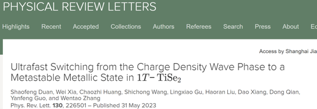
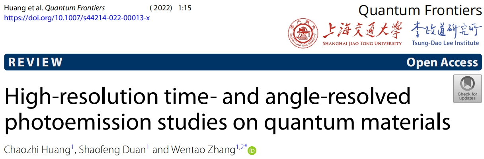
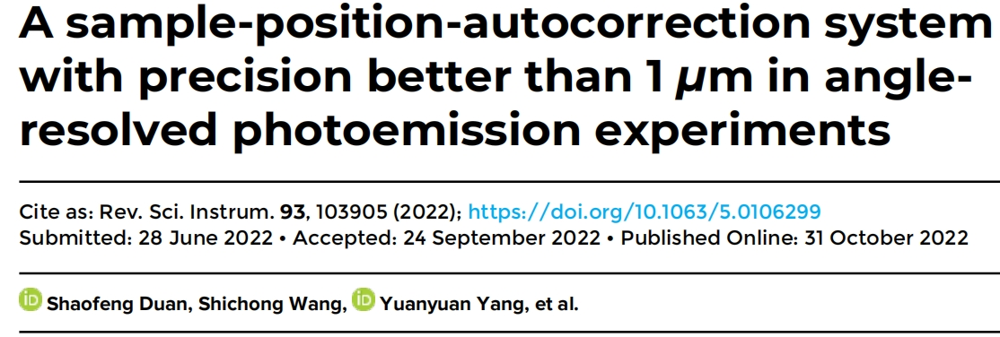
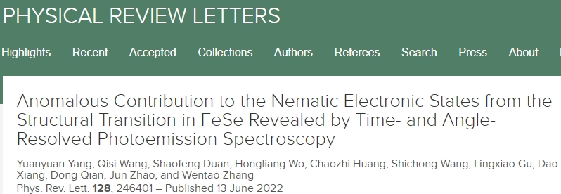

中文/EN
中文/EN研究成果
！提示：点击图片即可跳转链接
2023年
1.题目：Ultrafast Switching from the Charge Density Wave Phase to a Metastable Metallic State in 1T-TiSe2
期刊：Phys. Rev. Lett. 130, 226501 (2023).
2022年
2.题目：High-resolution time- and angle-resolved photoemission spectroscopy studies on quantum materials
期刊：Quantum Frontiers. 1, 15 (2022).
3.题目：A sample-position-autocorrection system with precision better than 1 µm in angle resolved photoemission experiment
期刊：Rev. Sci. Instrum. 93, 103905 (2022).
4.题目：Anomalous contribution to the nematic electronic states from the structural transition in FeSe revealed by time- and angle-resolved photoemission spectroscopy
期刊：Phys. Rev. Lett. 128, 246401 (2022).
5.题目：Unusual Band Splitting and Superconducting Gap Evolution with Sulfur Substitution in FeSe
期刊：[5]Chin. Phys. Lett. 39, 057302 (2022), Express Letter.